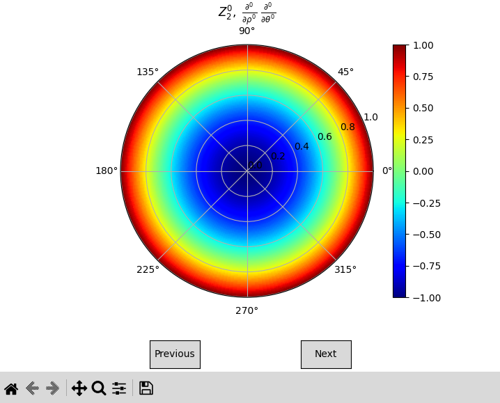

Usage#
The package pyzernike is a Python package to compute Zernike polynomials and their derivatives.
Compute Zernike Polynomials#
To compute a Zernike polynomial \(Z_{n}^{m}\), give its orders as integers. The result is an array
with the shape of rho:
from pyzernike import zernike_polynomial
import numpy as np
rho, theta = np.meshgrid(np.linspace(0, 1, 100), np.linspace(0, 2 * np.pi, 100))
Z_31 = zernike_polynomial(rho, theta, n=3, m=1) # array of shape (100, 100)
To compute the second derivative of \(Z_{3}^{1}\) with respect to \(\rho\):
Z_31_drho_drho = zernike_polynomial(rho, theta, n=3, m=1, rho_derivative=2)
To compute several Zernike polynomials at once, pass lists of \(n\), \(m\) and derivative orders. The result is a list of arrays:
n = [3, 4, 5]
m = [1, 2, 3]
rho_derivative = [2, 1, 0]
theta_derivative = [0, 1, 2]
Z_31_drho_drho, Z_42_drho_dtheta, Z_53_dtheta_dtheta = zernike_polynomial(rho, theta, n, m, rho_derivative, theta_derivative)
The integers are repeated to the length of the lists. For example, the polynomial \(Z_{2}^{2}\) and its gradient in polar coordinates are obtained with:
Z, dZ_drho, dZ_dtheta = zernike_polynomial(rho, theta, n=2, m=2, rho_derivative=[0, 1, 0], theta_derivative=[0, 0, 1])
With to_list=False, the polynomials are returned as a single array of shape \((N, \dots)\):
Z = zernike_polynomial(rho, theta, n=4, m=[-4, -2, 0, 2, 4], to_list=False) # array of shape (5, 100, 100)
Where \(\rho\) is outside \([0, 1]\) (or is not finite), the output is set to default
(numpy.nan by default).
See also
pyzernike.zernike_polynomial()for more details on the function parameters and usage.pyzernike.radial_polynomial()for computing radial polynomials \(R_{n}^{m}(\rho)\).
Get the mathematical expression of Zernike Polynomials#
To get the exact mathematical expression of a Zernike polynomial, use the zernike_symbolic function:
from pyzernike import zernike_symbolic
expression = zernike_symbolic(n=3, m=1)
print(expression)
(3*r**3 - 2*r)*cos(t)
Note
r is the symbol for \(\rho\) in the symbolic expression, and t is the symbol for \(\theta\).
You can use these symbols to manipulate the expressions further if needed.
The expression can be evaluated with numpy:
import numpy
import sympy
rho = numpy.linspace(0, 1, 100)
theta = numpy.linspace(0, 2 * numpy.pi, 100)
func = sympy.lambdify(['r', 't'], expression, 'numpy')
evaluated_result = numpy.asarray(func(rho, theta), dtype=numpy.float64)
The conversion to numpy.float64 is recommended: the exact integer coefficients of the high order
derivatives can exceed the int64 range (object arrays with NumPy < 2), and a constant expression
(e.g. 0) gives a scalar instead of an array.
See also
pyzernike.zernike_symbolic()for more details on the function parameters and usage.pyzernike.radial_symbolic()for computing symbolic radial polynomials.
Display Zernike Polynomials#
To visualize Zernike polynomials, use the zernike_display function. The “Previous” and “Next” buttons
of the figure navigate through the given polynomials:
from pyzernike import zernike_display
zernike_display(n=[0, 1, 1, 2, 2], m=[0, 1, -1, 2, -2])


To choose the polynomial and its derivatives directly in the figure, use the display_interactive function:
from pyzernike import display_interactive
display_interactive()
The left panel of the figure contains a selector to switch between the Zernike and the radial polynomials,
and text boxes to set \(n\), \(m\) and the derivative orders (press Enter to update the plot).
See also
pyzernike.zernike_display()for more details on the function parameters and usage.pyzernike.radial_display()for displaying radial Zernike polynomials.pyzernike.display_interactive()for the interactive display.
Going Further with pyzernike#
Compute all Zernike polynomials up to a specified order#
To compute all the Zernike polynomials up to a specified order, use the zernike_polynomial_up_to_order
function. The polynomials are sorted in the OSA/ANSI ordering, and result[d][j] is the polynomial of
index j for the d-th pair of derivative orders:
from pyzernike import zernike_polynomial_up_to_order, zernike_order_to_index, zernike_polynomials_count
import numpy as np
rho, theta = np.meshgrid(np.linspace(0, 1, 100), np.linspace(0, 2 * np.pi, 100))
# Compute all the Zernike polynomials up to the order 4
result = zernike_polynomial_up_to_order(rho, theta, order=4)
polynomials = result[0] # the polynomials without derivative (first derivative pair)
print(len(polynomials) == zernike_polynomials_count(4)) # 15 polynomials
# Access the Zernike polynomial Z_2^0
Z_20 = polynomials[zernike_order_to_index(2, 0)]
With to_list=False, the result is a single array of shape \((D, P, \dots)\), where \(D\) is
the number of derivative pairs and \(P\) the number of polynomials.
For high orders, use use_recursive=True: the polynomials are then computed with a recurrence relation,
which is faster and stays accurate at any order, whereas the accuracy of the explicit formula degrades
beyond \(n \approx 20\) (see Mathematical description):
# All the polynomials up to the order 40 and their gradient in polar coordinates
Z = zernike_polynomial_up_to_order(rho, theta, order=40, rho_derivative=[0, 1, 0], theta_derivative=[0, 0, 1], use_recursive=True, to_list=False)
# Z.shape == (3, 861, 100, 100)
See also
pyzernike.zernike_polynomial_up_to_order()for more details on the function parameters and usage.pyzernike.zernike_order_to_index()to convert (n, m) orders to their corresponding indices.pyzernike.zernike_index_to_order()to convert indices back to (n, m) orders.pyzernike.zernike_polynomials_count()to get the number of polynomials up to an order.
Compute Zernike polynomials in an extended domain (e.g., Cartesian coordinates)#
To compute Zernike polynomials in Cartesian coordinates \((x, y)\), use the xy_zernike_polynomial
function. This function computes the Zernike polynomials over an extended elliptic annulus domain \(G\)
defined by its semi-axes Rx and Ry, its center (x0, y0), its rotation angle alpha and its
inner ratio h (see Mathematical description).
For example, let’s compute the Zernike polynomial \(Z_{3}^{1}\) in Cartesian coordinates over a disk of radius 2:
from pyzernike import xy_zernike_polynomial
import numpy as np
# Create a grid of (x, y) points over the extended domain G
X, Y = np.meshgrid(np.linspace(-2, 2, 200), np.linspace(-2, 2, 200))
# Compute the Zernike polynomial Z_31 in Cartesian coordinates extended over a radius of 2
Z_31_xy = xy_zernike_polynomial(X, Y, n=3, m=1, Rx=2, Ry=2) # array of shape (200, 200)
The first and second derivatives with respect to \(x\) and \(y\) are available, e.g. the gradient and the Hessian matrix of \(Z_{3}^{1}\):
dZ_dx, dZ_dy = xy_zernike_polynomial(X, Y, n=3, m=1, Rx=2, Ry=2, x_derivative=[1, 0], y_derivative=[0, 1])
d2Z_dx2, d2Z_dy2, d2Z_dxdy = xy_zernike_polynomial(X, Y, n=3, m=1, Rx=2, Ry=2, x_derivative=[2, 0, 1], y_derivative=[0, 2, 1])
The equivalent polar coordinates \((\rho_{eq}, \theta_{eq})\) of the points can also be computed directly, and passed to the other functions of the package:
from pyzernike import cartesian_to_elliptic_annulus
rho_eq, theta_eq = cartesian_to_elliptic_annulus(X, Y, Rx=2, Ry=2)
See also
pyzernike.xy_zernike_polynomial()for more details on the function parameters and usage.pyzernike.xy_zernike_polynomial_up_to_order()to compute all Zernike polynomials up to a specified order in an extended domain (e.g., Cartesian coordinates).pyzernike.cartesian_to_elliptic_annulus()to compute the equivalent polar coordinates and their derivatives.
Command Line Display#
To display Zernike polynomials from the command line, you can use the pyzernike command followed by the desired options. For example:
pyzernike -r -n 3
This command will display the radial Zernike polynomials up to order 3.
To see the full list of options, you can run:
pyzernike --help
The available options are:
flag
-ror--radialwill display the radial Zernike polynomials instead of the full Zernike polynomials.flag
-n {N}or--n {N}will specify the maximum order of the Zernike polynomials to display. If not specified, the default value is 5.flag
-dr {D}or--rho_derivative {D}can be used to specify the radial derivative of the Zernike polynomials. If not specified, the default value is 0 for all polynomials.flag
-dt {D}or--theta_derivative {D}can be used to specify the angular derivative of the Zernike polynomials. If not specified, the default value is 0 for all polynomials.flag
-ior--interactivecan be used to launch the interactive display window (seepyzernike.display_interactive()). If given, ignore other options and launch the interactive display.flag
-hor--helpcan be used to display the help message.